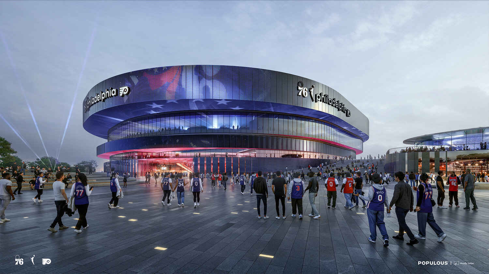
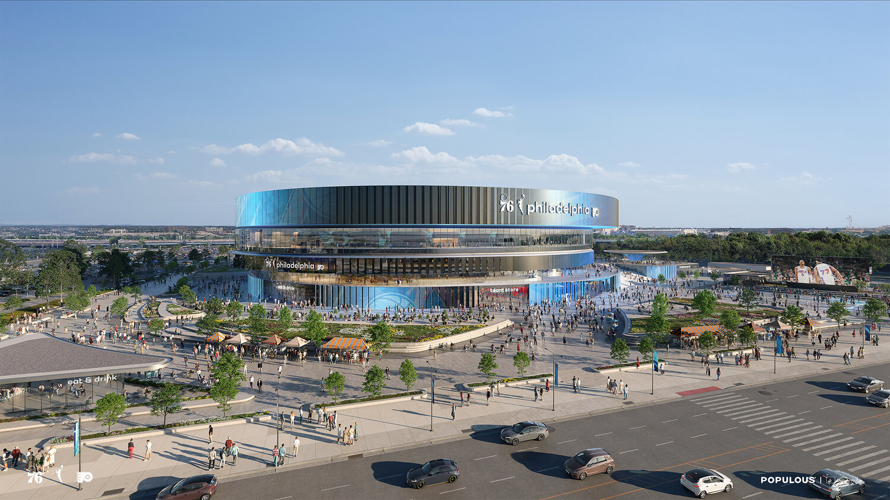

Sixers, Flyers Reveal New Look for Planned South Philadelphia Arena
Sports | NBA / NHL
Published: Tuesday, September 8, 2026

PHILADELPHIA — Philadelphia sports fans got their first glimpse Tuesday of what could become the next major landmark in the city’s South Philadelphia sports complex.
The Philadelphia 76ers and Philadelphia Flyers released exterior renderings of their proposed new arena, a privately financed project expected to open in 2030. The facility is also planned to become the home of Philadelphia’s future WNBA expansion franchise.
The arena is slated for the former Spectrum site, a location deeply connected to Philadelphia sports history. The original Spectrum opened in 1967 and served as the home of both the Sixers and Flyers before the teams eventually moved to the current arena complex.
Designers said the new building will incorporate elements inspired by the Spectrum while giving the facility a distinctly modern appearance. The project is being designed by Moody Nolan and Populous, the latter of which was also involved in the design of Citizens Bank Park.
A design inspired by the Spectrum and the Art Museum steps
The exterior concept features a series of stacked horizontal bands intended to reflect the shape and appearance of the original Spectrum. Plans also call for extensive outdoor areas, including more than half an acre of public space, food and beverage pavilions and areas where fans can gather before and after events.
One of the most noticeable features is expected to be a large staircase at the front entrance. The design draws inspiration from Philadelphia’s famous Art Museum steps and is intended to serve as a major gathering area for visitors.

Officials involved with the project say the arena is being designed around a modern, technology-focused fan experience that will extend beyond basketball and hockey. The venue is expected to host concerts, entertainment events and other large-scale gatherings.
“This is a new era for Philadelphia sports,” Comcast Corporation Chairman Brian Roberts said in announcing the project, pointing to the significance of building at the site where the Spectrum once stood.
Sixers Managing Partner Josh Harris also emphasized the project’s connection to Philadelphia fans and the city’s sports history.
Home for the Sixers, Flyers and a new WNBA team
The arena would represent another major chapter for the South Philadelphia sports complex, while also establishing a permanent home for Philadelphia’s new WNBA franchise. The expansion team is expected to begin play when the new building opens in 2030.
According to the teams, the development could create nearly 15,000 jobs and contribute approximately $6 billion in economic activity over the next decade. Officials also expect the project to produce hundreds of millions of dollars in additional tax revenue for Philadelphia and the School District of Philadelphia.
Comcast will control the naming rights for the new arena, although an official name has not yet been announced.
Approvals and community review still ahead
The project remains subject to the city’s design, approval and public-review processes. Additional community engagement, fan feedback and discussions with other stakeholders are expected as plans continue to develop.
The new proposal comes after the Sixers abandoned plans in 2025 for a Center City arena near Market Street. The organization instead joined Comcast Spectacor and the Flyers in pursuing a new facility at the South Philadelphia sports complex.
If completed as planned, the arena will give the Sixers, Flyers and Philadelphia’s WNBA team a new home while bringing a modern venue to the same grounds where the Spectrum helped define an earlier era of Philadelphia sports.